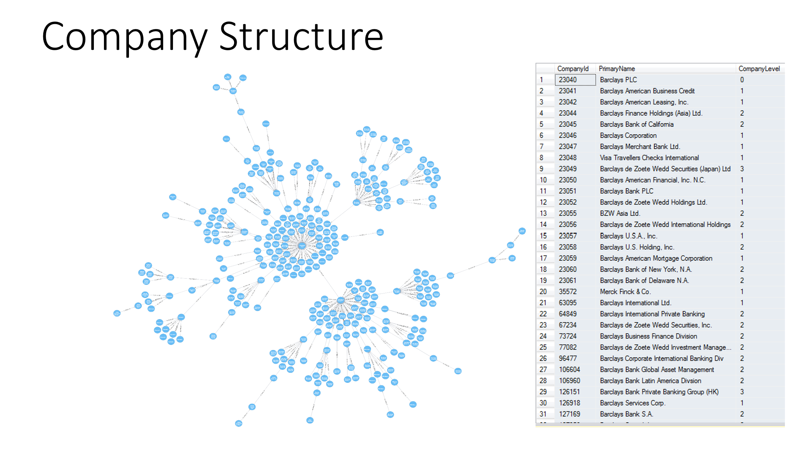
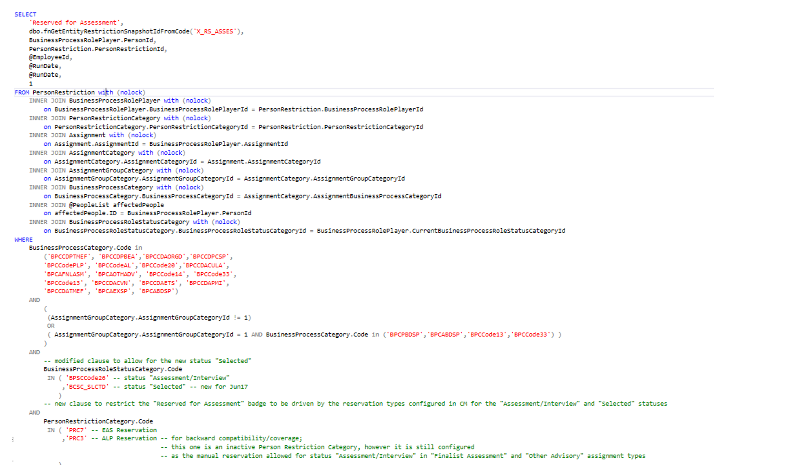
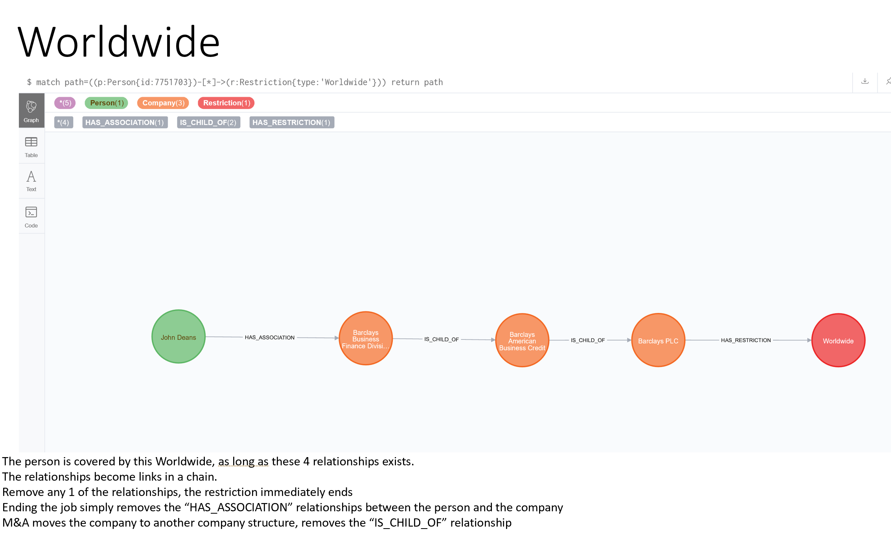
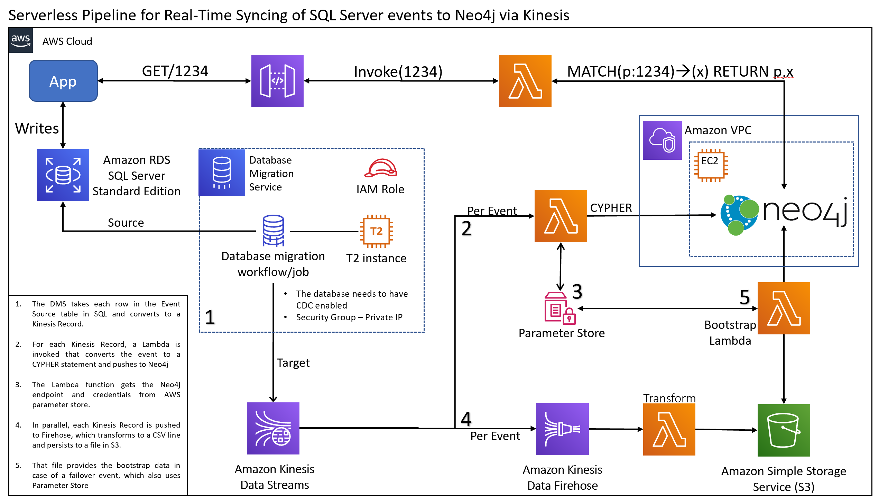

Rethinking Restrictions: From SQL to Graph
Introduction
What began as a simple legal safeguard for a recruitment firm quickly evolved into one of the most computationally expensive and complex systems in the company.
The Restrictions engine, originally built on SQL Server, was designed to answer a seemingly simple question: "Can we contact this person about this role?"
As the firm expanded its footprint globally, so did the volume, variety, and complexity of the restrictions that had to be checked.
The engine now supports over 22 distinct restriction types, must evaluate candidates across deeply nested global company hierarchies,
and processes millions of checks per day. This document details how the relational model started to break down under that weight —
and why a rethink of the system’s architecture became necessary.
What Are “Restrictions”?
At its core, a restriction is any condition that would make it inappropriate — legally, ethically, or contractually — to contact a specific individual about a specific opportunity.
Restrictions can be temporary or permanent, explicit or implied, and are derived from both external contracts and internal business logic.
Examples include:
- Off-Limits: A blanket rule disallowing contact with all employees in a specific function or division of a client company.
- Reservations: Soft holds placed on individuals or companies during active assignments.
- Direct Restrictions: Personal-level constraints like “Do Not Contact,” “Do Not Place,” or “Conversation Required.”
- Role-based Filters: Specific job functions or titles that are contractually protected (e.g., all Marketing Directors in a particular division).
- Temporal Limits: Restrictions that depend on time windows — e.g., “do not reapproach this candidate for 6 months after prior placement.”
These rules interact with one another in non-trivial ways, often involving combinations of role history, reporting structures, subsidiary relationships, and past assignment activity.
At scale, this demands a system that can dynamically evaluate many-to-many relationships across both people and companies.
Current Architecture: SQL Server
The existing implementation of Restrictions is built on SQL Server, leveraging a pair of master stored procedures that orchestrate hundreds of joins, filters, and recursive calls.
Key Characteristics:
- The system performs recursive traversal of company hierarchies using common table expressions (CTEs) to identify parent-child chains.
- It joins across employment history, job titles, industry classifications, and assignment activity.
- All evaluations are recomputed on demand, even when underlying data hasn't changed.
- Multiple filters must be checked per invocation — ranging from title exclusions to cooling-off periods.
Illustrative Example
Imagine a consultant is tasked with finding a new Chief Marketing Officer for Barclays PLC.
The candidate under consideration, Jane Doe, is currently employed as a Marketing Director at Barclays Digital Marketing,
which is two levels down in the organizational hierarchy.

The Restrictions engine must:
- Traverse the hierarchy upward from “Barclays Digital Marketing” to “Barclays UK” to “Barclays PLC.”
- Check each node in the hierarchy for any active off-limits rules, role-based filters, or time-based restrictions.
- Match Jane’s current title, historical titles, and reporting lines against all active exclusions.
- Check whether Jane is under a reservation due to an unrelated active assignment.
- Reconcile her candidate ID with past placements and conversation tracking logs.
On paper, this is a tree traversal problem. But in SQL, it’s expressed via recursive joins and filter logic spread across dozens of views and functions.
Simple Question
Asking asimple question such as - is a given person restricted based upon their status within a company assessment led to the following SQL logic being executed

Within this query, we had 9 tables, 19 business process categories, 2 business process role status category codes, 2 personrestrictioncategory codes
This type of logic was typical of using TSQL to solve the problem - bear in mind that there were 21 types of restriction to apply to a person. So any lateral career move by an individual resulted in 21 stored procedures like this being executed, and there were 10s of thousands of Person changes in our system every day
I performed an analysis that revealed that on a typical day, we had 25 million invocations of one of our central SQL Functions used in restrictions, and it resulted in just 373 updates to our system

This works — just barely — for small companies. But many client firms are global enterprises with thousands of subsidiaries,
multiple reporting levels, and complex internal legal structures (e.g., "Barclays UK Ltd" versus "Barclays Ireland DAC").
The system must also reconcile different identifiers for the same person, handle multi-role employment, and track overlapping reservation windows.
Why a C# Rewrite Doesn’t Solve It
At various points, migrating business logic to C# was considered. But this only moves the problem — it doesn’t solve it.
Why C# Becomes Cumbersome:
- Manual Traversal Logic: You must reimplement tree-walking logic manually, along with caching, stack control, and visited-node tracking.
- Loss of Declarative Semantics: SQL allows expressing restrictions as pure logic (“what must be true?”), while C# demands procedural control flow (“how do I get there?”).
- State Explosion: Business rules that were once compact SQL filters now become deeply nested
if-else structures, switch blocks, or polymorphic chains.
- ORM Friction: ORMs like Entity Framework are poorly suited to recursively loading hierarchies without causing N+1 issues or circular references.
- Complexity Shifting: Instead of simplifying the logic, a rewrite moves the complexity from the data layer into application code — spreading it across classes, functions, and middleware.
The net result is increased maintenance burden, slower feature iteration, and new classes of bugs introduced by duplicated logic.
This approach has major downsides:
- Recalculations happen even when nothing has changed
- Jobs and roles are joined repeatedly with filters and flags
- Historical data and current state coexist in the same tables
- Company structure traversal is recursive and expensive (e.g. Barclays has 495 children)
We tried to patch over the flaws with a “real-time badge” system, but that in itself has added 247,000 entries to a tracking table in production. These layers of indirection, compensating logic, and runtime patching are signals of a flawed design pattern.
What Makes This Hard
Restrictions logic requires graph traversal. Whether it’s checking if a job falls under a company-wide off-limit, or whether a person’s placement still binds them within a company family tree, the underlying data model is a graph of entities and relationships. But in SQL Server, those relationships are implicit, not native. We simulate them through joins and recursive CTEs.
Every production incident over the past three years has followed a familiar theme: the system fails to recognize a restriction due to complexity in traversing jobs, companies, and roles. These failures have high reputational impact and take considerable effort to debug.
Why Graph?
Graph databases are purpose-built for these kinds of problems. Graph databases hold the relationships between data as a priority
Instead of joining rows, they follow relationships. Nodes represent people, companies, jobs, restrictions. Relationships like WORKS_AT, PLACED_IN, or COVERED_BY explicitly model the connections we care about.
Traversal in a graph is lightweight and constant-time per hop — whether you're 2 or 20 levels deep in a company structure. We don’t have to re-derive anything. We just ask: “Can I navigate from this Person node to a Restriction node?” If yes, the person is restricted.
Benefits
- Simplified logic — no more multi-join SQL
- Accurate modeling of business rules
- Linear scaling with complexity
- Real-time restriction status without recalculation
- Eliminates need to persist interpreted state (badge snapshot)
SQL vs Graph: A Side-by-Side Comparison
| Aspect |
Relational (SQL Server) |
Graph (Neo4j) |
| Data Structure |
Tables joined by foreign keys |
Nodes and relationships |
| Traversal |
Requires recursive joins and CTEs |
Direct and native — follow edges |
| Restriction Evaluation |
Recalculated with every query or persisted snapshot |
Inferred instantly from graph structure |
| Debugging |
Hard to trace joins or CASE logic |
Each edge is a visible path |
| Performance |
Degrades with complexity and size |
Linear with depth, constant-time per hop |
| Maintainability |
Large stored procedures, fragile to schema change |
Schema-free traversal, declarative Cypher queries |
| Suitability |
Best for tabular data, not relationships |
Ideal for interconnected, rule-based systems |
Real-World Example
In Neo4j, we can model a Person who holds a Job at a Company. That company is part of a parent hierarchy, and at the top sits a Worldwide OffLimit. If all nodes and relationships are in place, the graph tells us this person is covered — no stored proc required.

When a job ends, we remove that node — the graph updates automatically. When a WWOL expires, we remove the edge — all associated people are instantly unaffected. No reprocessing. No snapshot table. No recursion.
Operationalizing This
We used Event Streaming from SQL Server to maintain the graph.
For details on this, see: Building an Event Streaming System for Distributed Change Processing
Only relevant changes (e.g. job current flag toggles) would trigger updates. Graph changes are fast, append-only, and logged. I’ve already used this approach in EventStream to map foreign key relationships to root entities.

Neo4j was the ideal fit for this. It’s mature, widely supported, and already proven in our environment. We could host it ourselves or use GrapheneDB as a managed provider. The existing restriction APIs could be refactored to call the graph service directly, removing the need for persistent badge tables or recalculation logic.
Why This Is the Right Move
- It’s accurate: we no longer approximate logic with code
- It’s testable: every hop and relationship is visible
- It’s maintainable: fewer lines of logic, more domain alignment
- It’s scalable: restrictions logic remains constant even as data grows
- It’s finished: we stop playing whack-a-mole with edge cases
✅ Conclusion
This journey exposed a fundamental misalignment between the system’s growing complexity and the relational model underpinning it. What began as a manageable rules engine gradually evolved into a fragile lattice of stored procedures, temporal logic, and recursive joins. The business problem—evaluating dynamic, multi-dimensional restrictions—demands a data model that mirrors those relationships. A graph-based approach offers the opportunity to model that complexity directly, reduce execution overhead, and deliver clearer logic that’s easier to evolve. Rethinking Restrictions isn’t just a technical refactor—it’s a structural realignment between business semantics and system design.